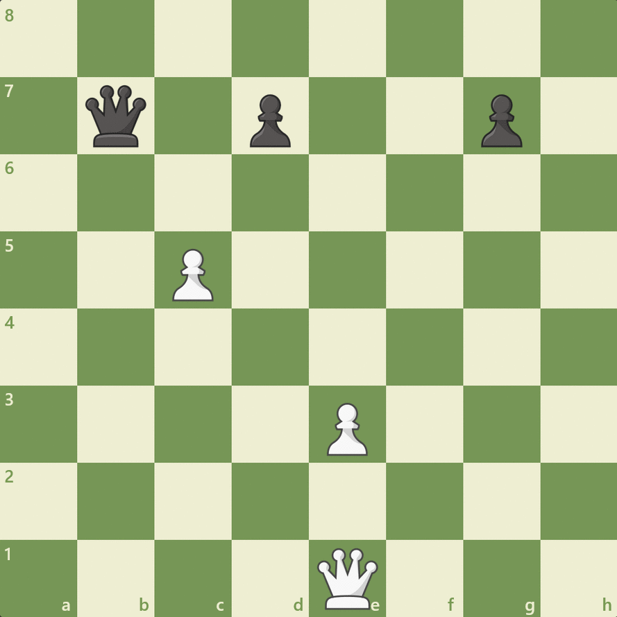

The Chess Board
A chessboard has 64 squares(8x8) with light and dark squares. When setting up the chessboard, the bottom-right corner always has to be a light square. Each piece has a value that doesn't affect the game.

First of all, chess pieces and a chessboard are required to play chess. Chess pieces include: 16 pawns, 4 bishops, 4 knights, 2 rooks, 2 queens and 2 kings (the pieces include both white and black).
A chessboard has 64 squares(8x8) with light and dark squares. When setting up the chessboard, the bottom-right corner always has to be a light square. Each piece has a value that doesn't affect the game.
Pawns are arguably the most useless piece in chess and it is the fact the pawn can only move one square at a time(except for the first move). You can move the pawn 1 or 2 squares for the first time. Pawns cannot go backward and can only capture one square diagonally. The pawn worth 1 point. point.
Below is a gif of pawn movement
The bishop can only move diagonally and it can only move on the same color squares it started on. The bishop is worth 3 points.
Below is a gif of bishop movement
The knight's movement is unique. Instead of moving sideways, straight or diagonally, it moves in an "L" shape. Knights can jump over pieces. The knight is worth 3 points.
Below is a gif showing knight movement
The rook's movement is simple. It can move up or down the chessboard. The rook is worth 5 points.
Below is a gif showing rook movement
The queen is the most powerful chess piece. It possesses the ability to move forwards, backwards, sideways, and diagonally.
Below is a gif showing queen movement
The king is the most important piece in chess. If you lose it, you lose the game. The king can only move one square at a time in any direction.
Below is a gif showing king movement